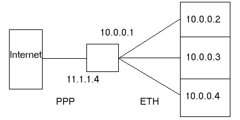

|
| ||||||||||
Vous vous demandez sûrement pourquoi j'ai choisi cette exemple ou sur quelle chaine j'ai vu cela. Eh bien, c'est trés simple. B est Internet, A est un client masqué et C est le serveur de mascarade.
Pour comprendre, je vais vous expliquer sommairement le TCP/IP. TCP/IP veut dire Tranfert Control Protocole / Internet Protocole (NdT: Protocole de Controle du Transfert / Protocole Internet )
Il est largement utilisé pour les communications d'ordinateurs (avant TCP/IP, tous le monde utilisait UUCP = Unix to Unix Copy Protocol (NdT : Protocole de Copie de Unix à Unix).
c'est le protocole qui se charge de vos communication réseaux, et pour cela, il utilise des adresses IP. Une adresse IP consiste en 12 nombres groupés par 3 (NdT : en fait ,il
s'agit de quatre octets séparés par des points), par exemple : 123.456.789.123. Chaque ordinateur connecté à un réseau (et notamment à Internet)
posséde une adresse IP unique (NdT : au moins une , mais parfois 2 ou 3 , toujours unique). TCP/IP fonctionne de cette façon:
=> Je suis 1.2.3.4 et je veut contacter 1.2.3.3
-> Je suis 1.2.3.3 , vous m'avez appelé ?
=> Je suis 1.2.3.4 et je vous ai contacté
-> Je suis 1.2.3.3 et je suis prêt
=> Je suis 1.2.3.4 et je veut ce fichier
-> Je suis 1.2.3.3 et j'envoie la premiére partie du fichier à 1.2.3.4
=> Je suis 1.2.3.4 et je l'ai reçu.
-> Je suis 1.2.3.3 et j'envoie la seconde partie du fichier à 1.2.3.4
=> Je suis 1.2.3.4 et je n'est rien reçu
-> Je suis 1.2.3.3 et je renvoie à nouveau
=> Je suis 1.2.3.4 et je l'ai reçu.
-> Je suis 1.2.3.3 et j'attends.
=> Je suis 1.2.3.4 et j'ai fini, bye
-> Je suis 1.2.3.3 Bye
Je sais que cela peut sembler infantile, mais c'est comme ça que fonctionne les communications de données ( et le TCP/IP)

Maintenant , vous devriez être capable de comprendre l'image. Vous y voyez un ordinateur ayant pour adresse IP locale 10.0.0.1 qui est connecté à Internet par une ligne
téléphonique et à qui son FAI (Fournisseur d'Accés Internet) a attribué l'adresse IP 11.1.1.4. Qu'est ce que cela veut dire ? Si quelqu'un sur Internet essaye
de contacter 11.1.1.4 ,il aura une réponse, mais si il essaye de contacter 10.0.0.1, il ne se passera rien, bien que ce soit le même ordinateur, car l'adresse 10.0.0.1 n'est pas
reconnu par le monde entier, elle est locale. Nous avons également les ordinateurs d'adresse 10.0.0.2 à 10.0.0.x qui sont connectés à travers 10.0.0.1 .Nous pouvons
considérer que 10.0.0.1 est une passerelle (un passerelle est un passage vers un autre réseau, cela peut être un lien entre 10.0.0.x et 10.0.1.x, mais dans ce cas, la
machine doit être reconnu par 10.0.0.x et 10.0.1.x , ou, en d'autre mots, doit avoir 2 cartes réseaux, ou dans notre cas un modem et une carte réseau). Donc, nous pouvons
dire que c'est un portail mais il reste encore un détail qui empéche 10.0.0.1 de devenir un portail Mais ce n'est pas pour la simple raison que l'internet ne le reconnait pas.
=> Je suis 10.0.0.2 et je veut vous contacter
-> Je suis 1.2.3.3 et je ne sais pas comment vous atteindre, au revoir (ce message n'est pas vraiment difusé car il n'y a pas de "route" entre les ordinateurs, il est
enregistré)
Donc à quoi sert la mascarade ? Eh bien, le serveur de mascarade donne son IP (11.1.1.4, c'est celle qui a été attribué par le FAI, attribué par DHCP, par
exemple) à la place de celle du réseau réseau, et se rappelle du destinataire de chaque paquet demandé. Un truc du genre:
=> Je suis 10.0.0.2 et je veut contacter 1.2.3.3
-> Je suis 10.0.0.1 et je m'occupe de cette requête
-> Je suis 14.1.1.4 et je veut contacter 1.2.3.3
_> Je suis 1.2.3.3 et j'attend la commande
J'espére que ceci a grandement éclairci les choses. Donc un serveur de mascarade donne son adresse IP (en fait , il masque l'adresse du sous réseau) pour que les autres
machines puissent accéder à Internet. Et les données entrantes sont filtrés pour le réseau 10.0.0.x .
=> Prompt for development and or incomplete code / drivers
=>Enable loadable module support
=>Networking support
=>Network firewalls
=>TCP/IP Networking
=>IP:forwarding/gatewaying
=>IP:firewalling
=>IP:masquerading
=>IP:ipportfw masq support
=>IP:ipautofw masq support
=>IP:ICMP masquerading
=>IP:always defragment
=>Dummy net driver support
=>IP:ip fwmark masq-forwarding support
Notez que cela ne représente que les options nécessaires à la mascarade, vous avez besoin d'autre options pour votre noyau. Quand tout est fini, on vous demandera si vous
souhaitez appliquer les changements. Les commandes suivantes compilent le noyau et peuvent prendre 10 à 40 minutes, pendant lesquelles s'afficheront peut être des messages
incompréhensibles sur votre écran, mais ne vous inquiétez pas, c'est normal..
[GoMoRRaH@SaTaN linux]$ make dep
[GoMoRRaH@SaTaN linux]$ make clean
[GoMoRRaH@SaTaN linux]$ make bzImage
[GoMoRRaH@SaTaN linux]$ cp /usr/src/linux/arch/i386/boot/bzImage /boot/kernel
[GoMoRRaH@SaTaN linux]$ make modules
[GoMoRRaH@SaTaN linux]$ make modules_install
Arrivé ici , vous devez éditer votre fichier /etc/lilo.conf. Il faut ajouter quelque chose dans le genre de ceci
image=/boot/kernel
label=masqkernel
root=/dev/hdax (placer ici votre partition/disque dur/systéme de fichier/.. principale)
read-only
Ceci permettra à votre gestionnaire de boot de trouver votre nouveau noyau au démarrage. Donc, la prochaine fois que vous voyez le prompt de Lilo, vous devrez taper
masqkernel pour utiliser le noyau permettant la mascarade.
[GoMoRRaH@SaTaN linux]$ lilo
added linux-2.2.5-15 *
added dos
added masqkernel
Maintenant vous devez modifier le fichier /etc/rc.d/rc.local pour que les modules soit chargé automatiquement au démarrage
.
.
/sbin/depmode -a
/sbin/modprobe ip_masq_ftp
/sbin/modprobe ip_masq_raudio
/sbin/modprobe ip_masq_irc
.
.
Ces modules permettent la mascarade pour l'IRC, le FTP et le Real Audio. Il reste une derniére chose à faire avant de rebooter, d'activer l' IPV4 forwarding (NdT : transmission
IpV4 ?).
[GoMoRRaH@SaTaN linux] echo "1" > /proc/sys/net/ip_forward Il ne reste plus qu'à rebooter votre systéme pour profiter de votre tout nouveau noyau. Vérifiez que
tout démarre correctement, si ce n'est pas le cas, il vous faudra recommencer les étapes précédentes, jusqu'à ce que vous ayez un noyau qui fonctionne.
Si vous avez des questions, vous pouvez m'écrire, GoMoRRaH , un membre du Black Sun Research Facility